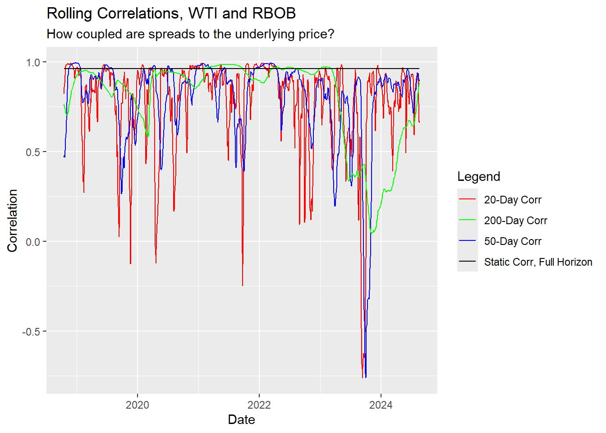
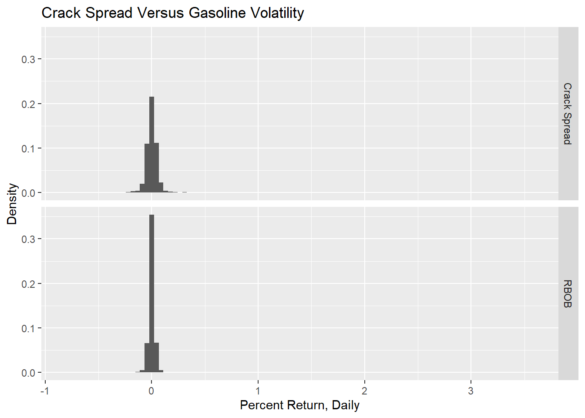

library(tidyquant)
library(tidyverse)
library(RTL)
library(tsibble)
library(feasts)
library(slider)
library(httr)
library(curl)
# Note that sometimes the lack of an API sometimes necessitates loading from excel worksheets.
# This is not the equivalent of modeling in excel, it's instead just another mechanism for us to load data automatically into the model.
library(xlsx)
EIA_API <- "UKCNbCB0m8aixfPBshQU3Jdlz2uZsEbG2HebvhHX"Report
# Yahoo Finance
tickers <- c("RB=F", "HO=F", "CL=F", "NG=F")
start_date <- '2021-01-01'
price_data_in <- tq_get(tickers, get = "stock.prices", from = start_date) %>%
dplyr::mutate(symbol = case_when(symbol == tickers[1] ~ "RBOB",
symbol == tickers[2] ~ "Heating_Oil",
symbol == tickers[3] ~ "WTI",
symbol == tickers[4] ~ "Natural_Gas"))
eia_tickers <- tribble(~ticker, ~name, "PET.WTTSTUS1.W", "US_Crude_Inventory",
"PET.MCRFPUS1.M", "US_Crude_Prod",
"NG.NW2_EPG0_SWO_R48_BCF.W", "Lower48NGStorage",
"PET.WCRNTUS2.W", "US_Crude_NI",
"PET.WRPNTUS2.W", "US_Petrol_Products_NI",
"PET.WGFRPUS2.W", "US_Gasoline_Production",
"PET.MGFSTUS1.M", "US_Gasoline_Stocks_Blended",
"PET.M_EPOBGRR_SAE_NUS_MBBL.M", "US_RBOB_Stocks_Unblended",
"PET.MO5ST_NUS_1.M", "US_Conventional_Stocks_Unblended",
"PET.WPULEUS3.W", "Pct_Operable_Utilization"
)
EIA_Data <- eia2tidy_all(eia_tickers, EIA_API)
EIA_Data %>% group_by(series) %>% dplyr::mutate(temp = 1, temp = cumsum(temp)) %>%
dplyr::filter(temp == 1) %>%
dplyr::select(-temp)# A tibble: 10 × 3
# Groups: series [10]
date series value
<date> <chr> <dbl>
1 2024-08-16 US_Crude_Inventory 1658445
2 2024-05-01 US_Crude_Prod 408522
3 2024-08-09 Lower48NGStorage 3264
4 2024-08-16 US_Crude_NI 2607
5 2024-08-16 US_Petrol_Products_NI -5432
6 2024-08-16 US_Gasoline_Production 9768
7 2024-05-01 US_Gasoline_Stocks_Blended 16804
8 2024-05-01 US_RBOB_Stocks_Unblended 53778
9 2024-05-01 US_Conventional_Stocks_Unblended 159919
10 2024-08-16 Pct_Operable_Utilization 92.3fred_tickers <- c("IPMINE", "GDP", "TRUCKD11")
fred_data <- tq_get(fred_tickers, get = "economic.data", from = start_date) %>%
dplyr::mutate(symbol = case_when(symbol == fred_tickers[1] ~ "Mining_Production_Index",
symbol == fred_tickers[2] ~ "US_GDP",
symbol == fred_tickers[3] ~ "Truck_Tonnage_Index")) %>%
dplyr::rename(series = symbol, value = price)
# I'd recommend incorporating Baltic Dry Index (BDI) for shipping by sea. Unfortunately these are metrics which require subscriptions, and as a result aren't included in this report.add_ret_metrics <- function(df_in){
# Accepts a df with columns value, series, date
# Adds returns and cumulative return metrics for value.
df_in %>%
group_by(series) %>%
arrange(series, date) %>%
dplyr::mutate(ret_pct = (value-lag(value))/lag(value),
ret_log = log(value/lag(value))) %>%
tidyr::drop_na() %>%
dplyr::mutate(cret_pct = cumprod(ret_pct+1),
cret_log = cumsum(ret_log),
year_month = yearmonth(date)) %>%
return()
}
price_data <- price_data_in %>%
dplyr::select(date, series = symbol, value = close, volume)
# rm(price_data_in)
fundamentals_data <- EIA_Data %>%
add_ret_metrics()Warning: There was 1 warning in `dplyr::mutate()`.
ℹ In argument: `ret_log = log(value/lag(value))`.
ℹ In group 9: `series = "US_Petrol_Products_NI"`.
Caused by warning in `log()`:
! NaNs produced# rm(EIA_Data)
# 3:2:1 Crack Spread used here. Setting below can be used to adjust the crack spread to other ratios, such as 5:3:2
spread_ratio <- c(3,2,1)
spread_data <- price_data %>%
pivot_wider(names_from = series, id_cols = date, values_from = value) %>%
dplyr::mutate(Crack_Spread = ((spread_ratio[2]*42*RBOB +
spread_ratio[3]*42*Heating_Oil) -
WTI*spread_ratio[1])/
spread_ratio[1])
price_data <- spread_data %>% dplyr::select(date, value = Crack_Spread) %>%
dplyr::mutate(series = "Crack_Spread", volume = 0) %>%
bind_rows(price_data) %>%
add_ret_metrics()
EIA_Data %>% pivot_wider(names_from = series, id_cols = date, values_from = value) %>%
dplyr::arrange(desc(date))# A tibble: 3,365 × 11
date US_Crude_Inventory US_Crude_Prod Lower48NGStorage US_Crude_NI
<date> <dbl> <dbl> <dbl> <dbl>
1 2024-08-16 1658445 NA NA 2607
2 2024-08-09 1663659 NA 3264 2529
3 2024-08-02 1666068 NA 3270 2586
4 2024-07-26 1664122 NA 3249 2034
5 2024-07-19 1665878 NA 3231 2685
6 2024-07-12 1669754 NA 3209 3073
7 2024-07-05 1658697 NA 3199 2761
8 2024-06-28 1655662 NA 3134 2146
9 2024-06-21 1668222 NA 3102 2701
10 2024-06-14 1658780 NA 3045 2636
# ℹ 3,355 more rows
# ℹ 6 more variables: US_Petrol_Products_NI <dbl>,
# US_Gasoline_Production <dbl>, US_Gasoline_Stocks_Blended <dbl>,
# US_RBOB_Stocks_Unblended <dbl>, US_Conventional_Stocks_Unblended <dbl>,
# Pct_Operable_Utilization <dbl># Rolling Correlation of RBOB and WTI
spread_data %>%
dplyr::mutate(static_cor = cor(WTI,RBOB),
cor20 = slide2_dbl(RBOB, WTI, cor, .before = 20, .complete = TRUE),
cor50 = slide2_dbl(RBOB, WTI, cor, .before = 50, .complete = TRUE),
cor200 = slide2_dbl(RBOB, WTI, cor, .before = 200, .complete = TRUE)
) %>%
tidyr::drop_na() %>%
ggplot() +
geom_line(aes(x=date, y = cor20, color = "20-Day Corr")) +
geom_line(aes(x=date, y = cor50, color = "50-Day Corr")) +
geom_line(aes(x=date, y = cor200, color = "200-Day Corr")) +
geom_line(aes(x = date, y = static_cor, color = "Static Corr, Full Horizon")) +
labs(title = "Rolling Correlations, WTI and RBOB",
subtitle = "How coupled are spreads to the underlying price?",
x = "Date",
y = "Correlation",
color = "Legend") +
scale_color_manual(values = c("20-Day Corr" = "red", "50-Day Corr" = "blue", "200-Day Corr" = "green", "Static Corr, Full Horizon" = "black"))
# Natural Gas and Spread Price
spread_data %>%
ggplot() +
geom_line(aes(x = date, y = Crack_Spread), color = "red") +
geom_line(aes(x = date, y = Natural_Gas), color = "black")# Crude Stocks
fundamentals_data %>%
dplyr::filter(series == "US_Crude_Inventory" & date > start_date) %>%
ggplot() +
geom_line(aes(x = date, y = value)) +
labs(title = "US Crude Stocks", y = "Thousands of Barrels", x = "Date")
# Crude Stocks, PCT Change
fundamentals_data %>%
dplyr::filter(series == "US_Crude_Inventory" & date > start_date) %>%
ggplot() +
geom_line(aes(x = date, y = ret_pct)) +
labs(title = "US Crude Stocks, Changes in Supply", y = "% Change in Supply", x = "Date")
# Plant Utilization versus Crude Inventories
fundamentals_data %>%
pivot_wider(names_from = series, id_cols = date, values_from = value) %>%
dplyr::select(Pct_Operable_Utilization, US_Crude_Inventory) %>%
tidyr::drop_na() %>%
cor() Pct_Operable_Utilization US_Crude_Inventory
Pct_Operable_Utilization 1.0000000 -0.2880864
US_Crude_Inventory -0.2880864 1.0000000# This graph reveals short term supply/demand shocks as well as a general inflationary pressure which leads to a gradual increase over the course of the time period.
price_data %>%
dplyr::filter(series == "RBOB") %>%
ggplot() +
geom_line(aes(x = date, y = value))price_data %>%
dplyr::filter(series == "Crack_Spread" | series == "RBOB" | series == "WTI" | series == "Heating_Oil") %>%
dplyr::mutate(series = case_when(series == "Crack_Spread" ~ "Crack Spread",
series == "RBOB" ~ "RBOB",
series == "WTI" ~ "WTI",
TRUE ~ "Heating Oil")) %>%
ggplot() +
geom_histogram(aes(x = ret_pct, y = ..count../sum(..count..)), bins = 100) +
labs(x = "Percent Return, Daily", y = "Density", title = "Crack Spread Volatility Compared to its Market Dependencies") +
facet_grid(series~.)Warning: The dot-dot notation (`..count..`) was deprecated in ggplot2 3.4.0.
ℹ Please use `after_stat(count)` instead.price_data %>%
dplyr::filter(series == "Crack_Spread" | series == "RBOB") %>%
dplyr::mutate(series = case_when(series == "Crack_Spread" ~ "Crack Spread",
series == "RBOB" ~ "RBOB",
series == "WTI" ~ "WTI",
TRUE ~ "Heating Oil")) %>%
ggplot() +
geom_histogram(aes(x = ret_pct, y = ..count../sum(..count..)), bins = 100) +
labs(x = "Percent Return, Daily", y = "Density", title = "Crack Spread Versus Gasoline Volatility") +
facet_grid(series~.)
# price_data %>% pivot_wider(id_cols = date, names_from = series, values_from = value) %>%
price_data %>%
group_by(series) %>%
dplyr::summarise(
`Average Return` = mean(ret_pct),
`Standard Deviation` = sd(ret_pct),
.groups = "keep")# A tibble: 5 × 3
# Groups: series [5]
series `Average Return` `Standard Deviation`
<chr> <dbl> <dbl>
1 Crack_Spread 0.00185 0.0482
2 Heating_Oil 0.000830 0.0263
3 Natural_Gas 0.00101 0.0490
4 RBOB 0.000847 0.0245
5 WTI 0.000764 0.0236# Pulling distance traveled estimates from FHWA
# https://www.fhwa.dot.gov/policyinformation/travel_monitoring/tvt.cfm
# Potential to create a fully automated workflow. For now, manually link the reports for the time period of interest.
# Must be newest to oldest
links <- c(FHWA2024 = "https://www.fhwa.dot.gov/policyinformation/travel_monitoring/24juntvt/24juntvt.xlsx",
FHWA2023 = "https://www.fhwa.dot.gov/policyinformation/travel_monitoring/23dectvt/23dectvt.xlsx",
FHWA2022 = "https://www.fhwa.dot.gov/policyinformation/travel_monitoring/22dectvt/22dectvt.xlsx",
FHWA2021 = "https://www.fhwa.dot.gov/policyinformation/travel_monitoring/21dectvt/21dectvt.xlsx")
month_tags <- c("JAN", "FEB", "MAR", "APR", "MAY", "JUN", "JUL", "AUG", "SEP", "OCT", "NOV", "DEC")
clean_FHWA <- function(df_in){
df_in_year <- paste(df_in %>% head(1), collapse = " ") %>% str_extract(pattern = "[0-9][0-9][0-9][0-9]")
df_in %>%
tail(1) %>%
pivot_longer(names_to = "month", cols = month_tags) %>%
dplyr::select(month, value) %>%
dplyr::mutate(year = df_in_year) %>%
drop_na() %>%
return()
}
for(i in 1:length(links)){
path <- paste0(names(links)[i],".xlsx")
curl_download(links[i], path)
# I am hesitant to use specific row indexes here, due to issues which can arise if the template changes. In a full implementation I'd add checks for keywords in certain rows.cells to ensure that necessary updates and mismatches aren't missed.
df1 <- xlsx::read.xlsx(path, sheetName = "Page 3", rowIndex = c(3,4,12))
df2 <- xlsx::read.xlsx(path, sheetName = "Page 3", rowIndex = c(3,13,20))
if(i == 1){
FHWA_Data <- df2 %>% clean_FHWA()
}
FHWA_Data <- bind_rows(df1 %>% clean_FHWA(), FHWA_Data)
}Warning: Using an external vector in selections was deprecated in tidyselect 1.1.0.
ℹ Please use `all_of()` or `any_of()` instead.
# Was:
data %>% select(month_tags)
# Now:
data %>% select(all_of(month_tags))
See <https://tidyselect.r-lib.org/reference/faq-external-vector.html>.FHWA_Data <- FHWA_Data %>%
dplyr::mutate(date = yearmonth(paste(month, year)),
series = "B_Miles_Driven") %>%
dplyr::select(series, date, value) %>%
dplyr::mutate(date = as.Date(date),
value = as.numeric(value))
# This uncovers for us some of the seasonal demand for fuel.
FHWA_Data %>%
arrange(date) %>%
ggplot() +
geom_line(aes(x = date, y = value)) +
labs(title = "Seasonal patterns in road travel, using FHWA Data",
x = "Date", y = "Billions of Miles Traveled")
# Re-visualizing data every time I wanted to add another data source was getting inefficient;
# Created a generalized line graph function
s_graph <- function(data, series_name, start_date_in = start_date){
data %>%
dplyr::filter(series == series_name) %>%
dplyr::filter(date >= start_date_in) %>%
ggplot() +
geom_line(aes(y = value, x = date)) +
labs(title = series_name) %>%
return()
}
# Fred
for(s in fred_data$series %>% unique()){
s_graph(fred_data, s) %>% print()
}


# Price Data
for(s in price_data$series %>% unique()){
s_graph(price_data, s) %>% print()
}


# Fundamentals Data, EIA
for(s in fundamentals_data$series %>% unique()){
s_graph(fundamentals_data, s) %>% print()
}


# Notes: Some indicators here track with GDP (Note the strong uptrend. To incorporate these, we may consider normalizing each index to start at 1, and then net the difference between GDP and the other indicator, making a spread)Recommendation
Rationale
Fundamental Market Drivers
Risk
Crack spread is more volatile than risk for a couple of reasons. Firstly, the crack spread is affected by 3 separate prices – crude, gasoline and distillates. Secondly, the spread between the prices is nominally smaller than the prices themselves. Combined, this means an uncorrelated move in any of the 3 prices will often result in a proportionally larger move in the spread. This makes the spread more risky. This can be seen by comparing gasoline prices the crack spread prices below:
#Graph Goes HereAppendix
Development Notes
# A place for the developer to note potential features and future directions to take the model.
# Can today's crack spread be used to predict tomorrows crude price? Perhaps is the crack spread is favorable enough we can expect a bullish run on crude as companies seek to increase production to capitalize on higher margins.
# Note the move to v2 API call on EIA
# 3 potential options for modelling future price:
# Regression model, and STI forecasts of dependent variables.
# Regression model making predictions using lagged variables.
# Regression model that predicts today price, and the difference between the prediction and the actual # price is used.
#The third option can be improved with Jarque-Bera distribution on the error terms, to determine how "off" a particular day is.
# Option 3 is preferable, since it can give us a band of expected prices today, and help us get a better sense of a strong/weak reversal potential.